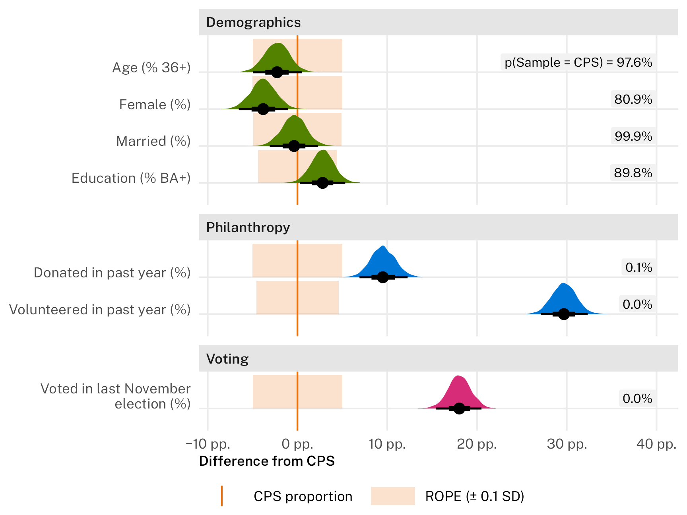

![]()
library(tidyverse) # {ggplot2}, {dplyr}, and friends
library(tinytable) # Nice tables
library(brms) # Best way to run Stan models
library(tidybayes) # Manipulate Stan objects and draws
library(broom) # Convert model objects to data frames
library(glue) # Easier string construction
library(scales) # Nicer labels
library(ggdist) # Plot posterior distributions
library(ggforce) # Extra ggplot things like facet_col()
library(patchwork) # Combine ggplot plots
# Load the synthetic survey results
results <- readRDS("synthetic_data.rds")
# Use the cmdstanr backend for brms because it's faster and more modern than the
# default rstan backend. You need to install the cmdstanr package first
# (https://mc-stan.org/cmdstanr/) and then run cmdstanr::install_cmdstan() to
# install cmdstan on your computer.
options(
mc.cores = 4,
brms.backend = "cmdstanr"
)
# Set some global Stan options
CHAINS <- 4
ITER <- 2000
WARMUP <- 1000
BAYES_SEED <- 1234
# Nice ggplot theme
theme_public <- function() {
theme_minimal(base_family = "Public Sans") +
theme(
panel.grid.minor = element_blank(),
plot.title = element_text(family = "Public Sans", face = "bold", size = rel(1.25)),
plot.subtitle = element_text(family = "Public Sans Light", face = "plain"),
plot.caption = element_text(family = "Public Sans Light", face = "plain"),
axis.title = element_text(family = "Public Sans Semibold", size = rel(0.8)),
axis.title.x = element_text(hjust = 0),
axis.title.y = element_text(hjust = 1),
strip.text = element_text(
family = "Public Sans Semibold", face = "plain",
size = rel(0.8), hjust = 0
),
strip.background = element_rect(fill = "grey90", color = NA),
legend.title = element_text(family = "Public Sans Semibold", size = rel(0.8)),
legend.text = element_text(size = rel(0.8)),
legend.position = "bottom",
legend.justification = "left",
legend.title.position = "top",
legend.margin = margin(l = 0, t = 0)
)
}
theme_set(theme_public())
update_geom_defaults("text", list(family = "Public Sans"))
update_geom_defaults("label", list(family = "Public Sans"))
# USWDS basic palette
# https://designsystem.digital.gov/utilities/color/#basic-palette-2
clrs <- c(
"#e52207", # .bg-red
"#e66f0e", # .bg-orange
"#ffbe2e", # .bg-gold
"#fee685", # .bg-yellow
"#538200", # .bg-green
"#04c585", # .bg-mint
"#009ec1", # .bg-cyan
"#0076d6", # .bg-blue
"#676cc8", # .bg-indigo
"#8168b3", # .bg-violet
"#d72d79" # .bg-magenta
)
# Some functions for creating percentage point labels
label_pp <- label_number(
accuracy = 1, scale = 100, suffix = " pp.", style_negative = "minus"
)
label_pp_01 <- label_number(
accuracy = 0.1, scale = 100, suffix = " pp.", style_negative = "minus"
)Last week I was making some final revisions to a paper where we used a neat conjoint experiment to test the effect of a bunch of different treatments on nonprofit donor preference.
One of the peer reviewers asked us to compare the characteristics of our experimental sample with the general population so that we could speak a little to the experiment’s generalizability. This is a super common thing to do with survey research, and one of the main reasons survey researchers include demographic questions in their surveys.
Thanks to the wonders of the R community—and thanks to publicly accessible data—I was able to grab nationally representative demographic data, clean it up and summarize it, run some statistical tests, and make a table to meet the reviewer’s request, all in like 45 minutes.
It was a magically quick and easy process, so I figured I’d make a guide about it so that the rest of the world (but mostly future me) can see how to do it.
Nationally representative demographic data
Finding nationally representative demographic data (in the US, at least) is pretty easy, and there are two common sources for it:
- The US Census’s American Community Survey (ACS) is a rolling monthly survey of ≈3.5 million (!!!) US households that’s compiled into an annual dataset.
- The US Census’s Current Population Survey (CPS) is a monthly survey of ≈100,000 US individuals. A more comprehensive annual version—the Annual Social and Economic Supplement (ASEC)—is published every March.
The two surveys serve different purposes, and the Census has an FAQ fact sheet explaining the difference between the ACS and CPS. Notably, the ACS only surveys households, and it uses a shorter 8-question survey, while the CPS tries to reach the entire civilian noninstitutionalized population and uses a longer, more detailed survey.
Researchers use both surveys—I’ve used both in my own work. According to the Census, due to its detailed questionnaire and staff experience and regular frequency, the CPS ASEC is a “high quality source of information used to produce the official annual estimate of poverty, and estimates of a number of other socioeconomic and demographic characteristics”. The ACS also has demographic details and people use those instead too.
I‚Äôm not entirely sure which one is best‚Äîto me they‚Äôre both great ü§∑‚Äç‚ôÇÔ∏è. Smarter people than me know and care about the difference.
Accessing US Census data
Getting data from the Census is a surprisingly complex process! There are websites and R packages that make it easier though.
ACS
For the ACS, the {tidycensus} R package provides an interface to the Census’s API, and its documentation is great and thorough. Working with the results is tricky though, and involves a lot of pivoting and reshaping and combining variables. I have a whole notebook showing how I access the ACS and create a bunch of variables, with little notes reminding myself how I constructed everything:
CPS (and others!)
{tidycensus} doesn’t provide Census API access to CPS data. Instead, IPUMS—a project housed at the University of Minnesota and supported by a consortium of other institutions and companies—provides easy access to all sorts of census and survey data, both through its website and through an API. It’s wild how much data they have. In addition to the CPS, they have the ACS, census microtata for 100+ countries, historical GIS shapefiles, time use surveys, and a ton of other things. It’s an incredible project.
Getting started
Who this guide is for
In this guide, we’ll use IPUMS to get CPS data (monthly and ASEC) with R. Because their data explorer website takes a little while to get used to, I’ll show a bunch of step-by-step screenshots of how to navigate it. It’s possible to access the IPUMS API with the {ipumsr} package, and I also show how to do that in this guide. But in order to use the API, you still need to know how to use the website—you have to find variable names and figure out which samples include which variables. So the screenshots below are still important even if you’re using the API.
I’ll then show how to answer the question of whether a survey proportion is equivalent to a population proportion in a couple diffferent ways:
- Frequentist/classical proportion tests with null hypothesis significance testing, and
- Bayesian proportion tests and inference based on regions of practical equivalence, or ROPEs
Before getting started, let’s load all the packages we need and create some helpful functions and variables.
The experimental survey data here comes from Chaudhry, Dotson, and Heiss (2024). Since we haven’t published it yet (though it’s close—it’s under review post R&R now!), the original data isn’t quite public yet. So I used the {synthpop} R package to create a synthetic version of part of our data that has the same relationships and distributions as the real results, but is all fake. You can see the R code I used for that process here.
If you want to follow along, you can download this synthetic data here:
-
 
synthetic_data.rds: RDS version with all the variable attributes (i.e. factor levels and ordering) included -
 
synthetic_data.csv: Plain-text version (but without variable attributes)
To reflect the fact that this is all public, government-created data, I’m using the Public Sans font, an open source font developed as part of the General Services Administration’s USWDS (US Web Design System) for making accessible federal government websites. I’m also using the USWDS’s basic color palette, developed by 18F.
Let’s get started!
Getting CPS data from the IPUMS website
Go to the IPUMS CPS website and create an account if you don’t already have one.
Once you’re logged in, go the “Select Data” page, where IPUMS tells you to do two things:
- Select samples, or specific verisons of different surveys
- Select variables, or specific columns in different surveys
Visually it looks like you should select samples first, but I actually find it easier to poke around for different variables first, since not all variables are recorded in every sample.
Finding variables
So first let‚Äôs look at a few variables to get a feel for the IPUMS data extract website. Click on the little ‚ÄúSEARCH üîç‚Äù button in the ‚ÄúSELECT VARIABLES‚Äù section. We could do a bunch of fancy advanced search options, but for now, just search for ‚Äúage‚Äù
There are 200+(!) age-related variables in the CPS data:
This big list shows some useful information already. The first variable in the search results is AGE, and it’s the one we care about. It gets recorded in every CPS survey: each monthly one and in the annual ASEC one. Not all the age variables do this—notice that WHYSS1 only appears in the annual ASEC.
If you click on AGE in the “Variable” column, you can see detailed information about the variable, like how it’s coded, a description, and its availability. For example, prior to 1976, age was only available in the annual ASEC; starting in January 1976, it became a monthly thing.
Since we know we want this variable, we can add it to our “Data Cart”. IPUMS ues a shopping metaphor for building a data extract—we can add different variables and samples to a cart and then check it out (for free) once we’ve found everything we’re looking for.
Click on “Add to cart” to add it, then go back to the search page to look for more variables. You can also add variables to the cart without going to the variable details page—there’s a plus sign in the search results page next to each result that will add the variable for you.
Now that we have age, we need to hunt around for other variables we care about, like sex, marital status, voting history, and so on. To speed things up, you can search for their official variable names and add each one to the cart:
- Sex =
SEX - Marital status =
MARST - Education =
EDUC - Donating =
VLDONATE - Volunteering =
VLSTATUS - Volunteering Supplement weight =
VLSUPPWT - Voting =
VOTED - Voter Supplement weight =
VOSUPPWT
Pay attention to the details!
Looking at the details for these variables is helpful since they’re all categorical variables, unlike age. For instance, marital status has 9 different levels:
Also, it’s important to check the variable details to check for availability. While basic demographic variables like age, sex, marital status, etc. are available in both the monthly surveys and in the annual ASEC, more specialized variables are not.
Variables related to philanthropy and volunteering are only available in September (since they’re part of a special CPS Volunteer Supplement), and only in some years:
Variables related to voting are only available in November in even-numbered years (since they’re part the CPS’s Voting and Registration Supplement)
Selecting samples
Great! If you check the cart, you’ll see all the variables we added at the bottom, along with a bunch of other pre-selected columns:
We can’t download any data yet, though. We’ve selected the variables—now we need to select the samples. Go back to the “Select data” page and click on “Select samples” (or click on the “Add more samples” button at the top of the data cart page).
By default, IPUMS will have a bunch of different samples pre-checked. In my case, it grabbed all annual ASEC surveys from 2010–2024, and all monthly surveys from 2021–2024.
Including all these samples would be useful if we were doing some sort of analysis of CPS trends over time, comparing changes in age or education or volunteering or whatever. But that doesn’t matter here—all we want to know is what age (and everything else) looked like at the time the survey was administered. That means we really just need one year.
However, we can’t just choose one sample. Things like demographics are availble in all annual and monthly samples, but volunteering is only available in September in specific years, and voting is only available in November in specific years.
This survey was administered in mid-2019, so we’ll choose samples that are as close to that as possible. Though demographics are available both monthly and annually, I like to use the annual versions because ASEC data is typically used to stand in for annual information—like if you were building a state-year panel dataset, you’d use ASEC data for each year. The ASEC occurs in March and actually overlaps with the monthly March data (IPUMS has a note about that), so the data technically is for March 2019, but whatever. We don’t have to be super precise here.
We’ll use the September 2019 sample for volunteering, even though that’s after the survey was administered. The next earliest volunteering data is the September 2017 sample, which is like 2 years before the survey. Things don’t line up precisely, but again, that’s fine.
Finally, we’ll use the November 2018 sample for voting. That’s before the survey, but it’s the closest we can get—the next alternative is November 2020, which is a year after the survey. Once again, nothing lines up exactly, but it’s fine.
In summary, here are the variables we want and the samples we’ll get them from:
- Age (
AGE): 2019 ASEC - Sex (
SEX): 2019 ASEC - Marital status (
MARST): 2019 ASEC - Education (
EDUC): 2019 ASEC - Donating (
VLDONATE): 2019-09 Monthly - Volunteering (
VLSTATUS): 2019-09 Monthly - Volunteering Supplement weight (
VLSUPPWT): 2019-09 Monthly - Voting (
VOTED): 2018-11 Monthly - Voter Supplement weight (
VOSUPPWT): 2018-11 Monthly
Select those three samples (2019 ASEC, September 2019, and November 2018) and click on “Submit sample selections” to add them to the cart.

{kind=link}
{kind=link}
{kind=link}
{kind=link}
{kind=link}
{kind=link}
{kind=link}
{kind=link}
{kind=link}
{kind=link}
{kind=link}
{kind=link}
{kind=link}
The cart should now have 9 variables and 3 samples. Conveniently, it has a little summary table showing which samples have which variables, where we can confirm that age, sex, marital status, and education are in all three, volunteering and donating are only in September 2019, and voting is only in November 2018.
{kind=link}
Downloading the data
Now that we have all the variables and samples we care about in the data cart, we can create a data extract and download this stuff.
Click on the “Create data extract” button at the top of the data cart page, which will take you to the official Extract Request page. There are a bunch of extra options here, and you can optionally add a description to the extract, but we’ll ignore all those. Click on the “Submit Abstract” button and wait for the IPUMS server to compile it all.
{kind=link}
Once it’s ready, it’ll appear at your “My Data” page, which will have a list of all your past extracts.
To download the data, we actually need to download two things:
-
The data itself. Click on the big green “Download .DAT” button.
{kind=link}
.dat vs .dat.gz
Depending on your browser, the downloaded file will either end in .dat or .dat.gz. If it ends in .gz, it’ll be compressed and zipped (the compressed version of this extract is 7.6 MB); if it ends in .dat, it’ll be uncompressed and huge (≈55 MB in this case). Chrome and Firefox will keep the compressed .gz version; Safari will automatically unzip it and throw away the .gz version, which is annoying.
Try to keep the compressed version. You don’t even need to extract/unzip it—the {ipumsr} data loading functions will handle unzipping for you automatically behind the scenes.
-
The machine-readable XML codebook, or the DDI file. R uses to clean and relabel the raw data when you load it. If you click on the DDI link in the Codebook column, your browser will likely open a plain text XML file, which isn’t really what you want. Instead, right click on the DDI link and choose “Save file as…” or “Download file as…” or whatever your browser calls it. This will let you save the XML file to your computer.
{kind=link}
There are some other helpful links there too:
-
If you click on the R link, it’ll give you a barebones R script for loading the data. It’ll look something like this:
# NOTE: To load data, you must download both the extract's data and the DDI # and also set the working directory to the folder with these files (or change the path below). if (!require("ipumsr")) stop("Reading IPUMS data into R requires the ipumsr package. It can be installed using the following command: install.packages('ipumsr')") ddi <- read_ipums_ddi("cps_00001.xml") data <- read_ipums_micro(ddi) If you click on the basic codebook, you’ll get a short plain text version of the codebook, which I find really helpful for remembering which variables show up where and how each variable is coded.
Move the newly downloaded .dat and the .ddi files to the same folder somewhere on your computer (preferably in an RStudio Project or a Positron project/folder or wherever your R working directory is). I put mine in a folder named raw_data; you can put it wherever.
We’re finally ready to load this CPS data into R!
More reproducible alternative: using the IPUMS API
Alternatively, it’s possible to use the {ipumsr} package to access the IPUMS API directly and not need to manually download the data extract from the IPUMS website.
The {ipumsr} API functions essentially let you programmatically create and download a data extract cart. Unless you know the IPUMS CPS data really well, you’ll still likely need to hunt around the website for specific variables and their availabilities, so the whole previous section is still relevant.
The {ipumsr} vignette for working with the API is nice and complete—see that for full details.
Here’s an abbreviated example of how to get the same data extract we collected manually from the website:
-
Go to your IPUMS dashboard and create an API key. This needs to be stored as an environment variable named
IPUMS_API_KEY. You can manually add this to your.Renvironfile, or you can run this to make {ipumsr} do it for you:ipumsr::set_ipums_api_key("BLAH", save = TRUE) -
Build a data extract with
define_extract_micro(). This is the equivalent of adding stuff to your data cart on the IPUMS website. You’ll need to know two things:The variable names, which you can find by searching the IPUMS website
-
The sample IDs, which you can find by running
get_sample_info():library(tidyverse) library(ipumsr) all_cps_samples <- get_sample_info(collection = "cps") # Find the names for 2019 samples all_cps_samples |> filter(str_detect(description, "ASEC 2019")) #> # A tibble: 13 × 2 #> name description #> <chr> <chr> #> 1 cps2019_01s IPUMS-CPS, January 2019 #> 2 cps2019_02s IPUMS-CPS, February 2019 #> 3 cps2019_03b IPUMS-CPS, March 2019 #> 4 cps2019_04b IPUMS-CPS, April 2019 #> 5 cps2019_05s IPUMS-CPS, May 2019 #> 6 cps2019_06s IPUMS-CPS, June 2019 #> 7 cps2019_03s IPUMS-CPS, ASEC 2019 #> ...
The code for creating the extract will look like this:
cps_extract_definition <- define_extract_micro( collection = "cps", description = "API extract for blog post", samples = c( "cps2019_03s", # ASEC, March 2019 "cps2019_09s", # CPS, September 2019 "cps2018_11s" # CPS, November 2018 ), variables = c( "AGE", "SEX", "MARST", "EDUC", "VLDONATE", "VLSTATUS", "VLSUPPWT", "VOTED", "VOSUPPWT" ) )This is identical to what we had in the cart on the the website: 9 variables and 3 samples:
cps_extract_definition #> Unsubmitted IPUMS CPS extract #> Description: API extract for blog post #> #> Samples: (3 total) cps2019_03s, cps2019_09s, cps2018_11s #> Variables: (9 total) AGE, SEX, MARST, EDUC, VLDONATE, VLSTATUS, VLSU... -
Submit the request to the server to generate the extract. This is equivalent to checking out your data cart on the website.
cps_extract <- submit_extract(cps_extract_definition) #> Successfully submitted IPUMS CPS extract number ZZZZ -
Download the extract. The extract won’t be downloadable immediately—you need to wait for e-mail confirmation. Once it’s ready, you can download it with
download_extract(), which will download both the.dat.gzdata and the.xmlcodebook to your computer:cps_downloaded <- download_extract(cps_extract, download_dir = "raw_data") #> |==================================================| 100% #> |==================================================| 100% #> DDI codebook file saved to ~/blah/raw_data/cps_ZZZZ.xml #> Data file saved to ~/blah/raw_data/cps_ZZZZ.dat.gz -
Once it’s on your computer, you can load it with the standard {ipumsr} process shown in the next section.
cps_data <- read_ipums_micro(cps_downloaded)
The IPUMS API and literate programming
If you’re using a literate programming document Quarto or R Markdown, don’t include this API extraction process in your document. It will rerun every time you render your document and create a new IPUMS extract each time, which is excessive. It’s best to run this process in a separate R script or function (perhaps orchestrated with something like {targets}), and then load the DDI .xml and .dat data in the document.
Loading CPS data
Getting this data into R is easy thanks to the {ipumsr} package. We feed the XML DDI codebook into read_ipums_ddi() and then feed that into read_ipums_micro()
library(ipumsr)
ddi <- read_ipums_ddi("raw_data/cps_00001.xml")
cps_data <- read_ipums_micro(ddi, data_file = "raw_data/cps_00001.dat.gz", verbose = FALSE)
glimpse(cps_data)
## Rows: 421,402
## Columns: 21
## $ YEAR <dbl> 2018, 2018, 2018, 2018, 2018, 2018, 2018, 2018, 2018, 2018, 2018, 2018, 2018, 2018, 2018, 2018, 2018, 2018, 2018, 2018, 2018, 2018, 2018, 2018, 2018, 2018, 2018, 2018, 2018, 2018, 2018, 2018, 2018, 2018, 2018, 2018, 2018, 2018, 2018, 2018, 2018, 2018, 2018, 2018, 2018, 2018, 2018,…
## $ SERIAL <dbl> 1, 1, 3, 4, 4, 4, 4, 5, 5, 6, 6, 7, 7, 7, 8, 8, 9, 9, 10, 10, 11, 12, 13, 13, 14, 14, 14, 15, 15, 16, 17, 19, 20, 20, 21, 21, 22, 23, 23, 23, 23, 24, 25, 26, 26, 26, 26, 26, 28, 28, 28, 28, 29, 30, 30, 30, 32, 36, 36, 37, 37, 37, 37, 39, 39, 39, 39, 39, 40, 40, 41, 41, 41, 41, 42,…
## $ MONTH <int+lbl> 11, 11, 11, 11, 11, 11, 11, 11, 11, 11, 11, 11, 11, 11, 11, 11, 11, 11, 11, 11, 11, 11, 11, 11, 11, 11, 11, 11, 11, 11, 11, 11, 11, 11, 11, 11, 11, 11, 11, 11, 11, 11, 11, 11, 11, 11, 11, 11, 11, 11, 11, 11, 11, 11, 11, 11, 11, 11, 11, 11, 11, 11, 11, 11, 11, 11, 11, 11, 11, 1…
## $ HWTFINL <dbl> 1704, 1704, 1957, 1688, 1688, 1688, 1688, 2090, 2090, 1832, 1832, 1779, 1779, 1779, 1853, 1853, 2077, 2077, 1427, 1427, 1611, 2044, 1738, 1738, 1690, 1690, 1690, 3135, 3135, 2679, 2253, 1639, 1615, 1615, 1515, 1515, 2254, 1459, 1459, 1459, 1459, 1960, 1942, 1701, 1701, 1701, 1701,…
## $ CPSID <dbl> 2.017e+13, 2.017e+13, 2.018e+13, 2.017e+13, 2.017e+13, 2.017e+13, 2.017e+13, 2.018e+13, 2.018e+13, 2.017e+13, 2.017e+13, 2.018e+13, 2.018e+13, 2.018e+13, 2.017e+13, 2.017e+13, 2.018e+13, 2.018e+13, 2.018e+13, 2.018e+13, 2.017e+13, 2.017e+13, 2.017e+13, 2.017e+13, 2.017e+13, 2.017e…
## $ ASECFLAG <int+lbl> NA, NA, NA, NA, NA, NA, NA, NA, NA, NA, NA, NA, NA, NA, NA, NA, NA, NA, NA, NA, NA, NA, NA, NA, NA, NA, NA, NA, NA, NA, NA, NA, NA, NA, NA, NA, NA, NA, NA, NA, NA, NA, NA, NA, NA, NA, NA, NA, NA, NA, NA, NA, NA, NA, NA, NA, NA, NA, NA, NA, NA, NA, NA, NA, NA, NA, NA, NA, NA, N…
## $ ASECWTH <dbl> NA, NA, NA, NA, NA, NA, NA, NA, NA, NA, NA, NA, NA, NA, NA, NA, NA, NA, NA, NA, NA, NA, NA, NA, NA, NA, NA, NA, NA, NA, NA, NA, NA, NA, NA, NA, NA, NA, NA, NA, NA, NA, NA, NA, NA, NA, NA, NA, NA, NA, NA, NA, NA, NA, NA, NA, NA, NA, NA, NA, NA, NA, NA, NA, NA, NA, NA, NA, NA, NA, N…
## $ PERNUM <dbl> 1, 2, 1, 1, 2, 3, 4, 1, 2, 1, 2, 1, 2, 3, 1, 2, 1, 2, 1, 2, 1, 1, 1, 2, 1, 2, 3, 1, 2, 1, 1, 1, 1, 2, 1, 2, 1, 1, 2, 3, 4, 1, 1, 1, 2, 3, 4, 5, 1, 2, 3, 4, 1, 1, 2, 3, 1, 1, 2, 1, 2, 3, 4, 1, 2, 3, 4, 5, 1, 2, 1, 2, 3, 4, 1, 1, 1, 2, 1, 1, 2, 3, 1, 2, 1, 2, 3, 4, 1, 2, 1, 2, 3, 4,…
## $ WTFINL <dbl> 1704, 1845, 1957, 1688, 2780, 2780, 2679, 2090, 2090, 1832, 2679, 1754, 1779, 2452, 1853, 1870, 2151, 2077, 2003, 1427, 1611, 2044, 1738, 1738, 1690, 2102, 2537, 3135, 4172, 2679, 2253, 1639, 1615, 2609, 1900, 1515, 2254, 1459, 1546, 1912, 1752, 1960, 1942, 1527, 1701, 2231, 2104,…
## $ CPSIDP <dbl> 2.017e+13, 2.017e+13, 2.018e+13, 2.017e+13, 2.017e+13, 2.017e+13, 2.017e+13, 2.018e+13, 2.018e+13, 2.017e+13, 2.017e+13, 2.018e+13, 2.018e+13, 2.018e+13, 2.017e+13, 2.017e+13, 2.018e+13, 2.018e+13, 2.018e+13, 2.018e+13, 2.017e+13, 2.017e+13, 2.017e+13, 2.017e+13, 2.017e+13, 2.017e…
## $ CPSIDV <dbl> 2.017e+14, 2.017e+14, 2.018e+14, 2.017e+14, 2.017e+14, 2.017e+14, 2.017e+14, 2.018e+14, 2.018e+14, 2.017e+14, 2.017e+14, 2.018e+14, 2.018e+14, 2.018e+14, 2.017e+14, 2.017e+14, 2.018e+14, 2.018e+14, 2.018e+14, 2.018e+14, 2.017e+14, 2.017e+14, 2.017e+14, 2.017e+14, 2.017e+14, 2.017e…
## $ ASECWT <dbl> NA, NA, NA, NA, NA, NA, NA, NA, NA, NA, NA, NA, NA, NA, NA, NA, NA, NA, NA, NA, NA, NA, NA, NA, NA, NA, NA, NA, NA, NA, NA, NA, NA, NA, NA, NA, NA, NA, NA, NA, NA, NA, NA, NA, NA, NA, NA, NA, NA, NA, NA, NA, NA, NA, NA, NA, NA, NA, NA, NA, NA, NA, NA, NA, NA, NA, NA, NA, NA, NA, N…
## $ AGE <int+lbl> 26, 26, 48, 53, 16, 16, 20, 22, 23, 57, 23, 61, 62, 39, 74, 49, 54, 52, 69, 76, 41, 56, 64, 62, 53, 13, 21, 28, 28, 40, 51, 78, 64, 40, 59, 36, 27, 35, 36, 5, 8, 76, 80, 36, 33, 3, 6, 11, 62, 80, 61, 61, 57, 24, 22, 26, 61, 24, 0, 37, 3, 5, 32, 33, 8, 9, 10, 15, 55, 61, 29, 29…
## $ SEX <int+lbl> 2, 1, 2, 2, 1, 1, 2, 1, 1, 2, 2, 1, 2, 2, 2, 2, 1, 2, 1, 2, 1, 2, 1, 1, 1, 2, 2, 2, 1, 1, 2, 2, 2, 2, 1, 2, 2, 2, 1, 1, 1, 2, 1, 1, 2, 2, 2, 2, 2, 1, 1, 1, 1, 1, 2, 1, 2, 2, 2, 2, 2, 2, 1, 2, 2, 2, 1, 1, 1, 2, 2, 1, 2, 1, 1, 1, 1, 2, 2, 1, 2, 2, 2, 1, 1, 2, 2, 1, 2, 1, 2, 2, 2…
## $ MARST <int+lbl> 6, 6, 4, 4, 6, 6, 6, 6, 6, 4, 6, 1, 1, 6, 5, 6, 1, 1, 1, 1, 6, 4, 6, 6, 5, 9, 6, 1, 1, 6, 3, 5, 6, 6, 1, 1, 6, 1, 1, 9, 9, 5, 4, 1, 1, 9, 9, 9, 6, 5, 4, 3, 4, 6, 6, 6, 3, 6, 9, 3, 9, 9, 6, 6, 9, 9, 9, 6, 1, 1, 1, 1, 9, 9, 6, 4, 1, 1, 4, 1, 1, 9, 1, 1, 1, 1, 9, 9, 1, 1, 4, 1, 5…
## $ EDUC <int+lbl> 111, 123, 73, 81, 50, 50, 81, 81, 81, 111, 81, 81, 81, 92, 81, 81, 123, 111, 81, 60, 111, 73, 73, 73, 81, 1, 81, 81, 81, 91, 111, 60, 73, 73, 125, 81, 92, 124, 111, 1, 1, 60, 73, 123, 125, 1, 1, 1, 73, 30, 73, 73, 124, 81, 92, 73, 73, 73, 1, 20, 1, 1, 20, 73, 1, 1, 1, 30, 111,…
## $ VLSTATUS <int+lbl> NA, NA, NA, NA, NA, NA, NA, NA, NA, NA, NA, NA, NA, NA, NA, NA, NA, NA, NA, NA, NA, NA, NA, NA, NA, NA, NA, NA, NA, NA, NA, NA, NA, NA, NA, NA, NA, NA, NA, NA, NA, NA, NA, NA, NA, NA, NA, NA, NA, NA, NA, NA, NA, NA, NA, NA, NA, NA, NA, NA, NA, NA, NA, NA, NA, NA, NA, NA, NA, N…
## $ VLDONATE <int+lbl> NA, NA, NA, NA, NA, NA, NA, NA, NA, NA, NA, NA, NA, NA, NA, NA, NA, NA, NA, NA, NA, NA, NA, NA, NA, NA, NA, NA, NA, NA, NA, NA, NA, NA, NA, NA, NA, NA, NA, NA, NA, NA, NA, NA, NA, NA, NA, NA, NA, NA, NA, NA, NA, NA, NA, NA, NA, NA, NA, NA, NA, NA, NA, NA, NA, NA, NA, NA, NA, N…
## $ VLSUPPWT <dbl> NA, NA, NA, NA, NA, NA, NA, NA, NA, NA, NA, NA, NA, NA, NA, NA, NA, NA, NA, NA, NA, NA, NA, NA, NA, NA, NA, NA, NA, NA, NA, NA, NA, NA, NA, NA, NA, NA, NA, NA, NA, NA, NA, NA, NA, NA, NA, NA, NA, NA, NA, NA, NA, NA, NA, NA, NA, NA, NA, NA, NA, NA, NA, NA, NA, NA, NA, NA, NA, NA, N…
## $ VOTED <int+lbl> 98, 98, 2, 2, 99, 99, 2, 99, 99, 98, 98, 2, 2, 2, 1, 97, 2, 2, 1, 1, 2, 98, 2, 1, 2, 99, 1, 1, 2, 98, 98, 2, 98, 98, 98, 98, 2, 2, 2, 99, 99, 1, 2, 1, 1, 99, 99, 99, 2, 1, 1, 2, 2, 1, 1, 1, 2, 1, 99, 98, 99, 99, 98, 2, 99, 99, 99, 99, 1, 1, 2, 2, 99, 99, 2, 98, 2, 2, 96, 2, 2,…
## $ VOSUPPWT <dbl> 1704, 1845, 1957, 1688, 2780, 2780, 2679, 2090, 2090, 1832, 2679, 1754, 1779, 2452, 1853, 1870, 2151, 2077, 2003, 1427, 1611, 2044, 1738, 1738, 1690, 2102, 2537, 3135, 4172, 2679, 2253, 1639, 1615, 2609, 1900, 1515, 2254, 1459, 1546, 1912, 1752, 1960, 1942, 1527, 1701, 2231, 2104,…holy moly we have nearly half a million rows. That’s because we have three samples (2019 ASEC, September 2019, and November 2018) and they’re all stacked on top of each other in this data. We need to filter this huge data to extract the three samples. We’ll also remove rows with missing data.
cps_demographics <- cps_data |>
# Only look at the 2019 ASEC data
filter(YEAR == 2019, MONTH == 03, ASECFLAG == 1) |>
# Remove rows that are missing or are "not in universe"
mutate(
SEX = ifelse(SEX == 9, NA, SEX),
MARST = ifelse(MARST == 9, NA, MARST),
EDUC = ifelse(EDUC < 1 | EDUC == 999, NA, EDUC)
)
cps_volunteer <- cps_data |>
filter(YEAR == 2019, MONTH == 09) |>
# Remove rows that are missing or are "not in universe"
mutate(across(c(VLSTATUS, VLDONATE), \(x) ifelse(x == 99, NA, x)))
cps_voting <- cps_data |>
filter(YEAR == 2018, MONTH == 11) |>
# Remove rows that are missing or are "not in universe"
mutate(VOTED = ifelse(VOTED == 99, NA, VOTED))These counts are more reasonable (but still huge!)
Summarizing CPS data
Ultimately, our goal is to find the population-level average of a bunch of characteristics and see if our sample plausibly matches population averages.
Things get a little tricky and loosey-goosey here. The different levels measured by the CPS don’t always match what’s in the survey. For example, the CPS measures sex and provides only 2 levels (1 = male; 2 = female); the experiment called this construct gender and included male, female,1 transgender, prefer not to say, and other.
1 We should have called these “man” and “woman” since gender ≠ sex.
To make the survey question reasonably match what the CPS is capturing, I find that it’s easiest to collapse both the survey data and the CPS data to simpler constructs. Before we collapse things, though, we need to look at one statistical issue: weighting.
Weighting
In an effort to make the CPS nationally representative, every row is weighted—each individual does not represent the same number of persons in the population. The Census oversamples some subpopulations and shifts weights up and down to give individuals more or less statistical influence in the sample so that the survey results better approximate the characteristics of the general population. Any analysis we do with CPS data needs to take those weights into account.
The weights for ASEC variables are included in the ASECWT column; the weights for volunteering and voting variables are in the VLSUPPWT and VOSUPPWT columns
If we’re calculating basic averages, we can use weighted.mean() instead of mean(). Note the difference in average when we don’t weight!
cps_demographics |>
summarize(
avg_age_weighted = weighted.mean(AGE, w = ASECWT), # BAD
avg_age_unweighted = mean(AGE) # GOOD
)
## # A tibble: 1 × 2
## avg_age_weighted avg_age_unweighted
## <dbl> <dbl>
## 1 38.8 37.3If we’re doing stuff with models, we can use the weights argument:
# BAD: Non-weighted intercept-only model
lm(AGE ~ 1, data = cps_demographics) |>
tidy(conf.int = TRUE)
## # A tibble: 1 × 7
## term estimate std.error statistic p.value conf.low conf.high
## <chr> <dbl> <dbl> <dbl> <dbl> <dbl> <dbl>
## 1 (Intercept) 37.3 0.0540 690. 0 37.2 37.4
# GOOD: Weighted intercept-only model
lm(AGE ~ 1, data = cps_demographics, weights = ASECWT) |>
tidy(conf.int = TRUE)
## # A tibble: 1 × 7
## term estimate std.error statistic p.value conf.low conf.high
## <chr> <dbl> <dbl> <dbl> <dbl> <dbl> <dbl>
## 1 (Intercept) 38.8 0.0542 715. 0 38.7 38.9Base R only really has weighted.mean(). If we want other things, like a weighted variance, or weighted rank, or weighted table/crosstabs, we can use a bunch of different functions in the {Hmisc} package:
# Some Hmisc::wtd.*() things:
cps_demographics |>
summarize(
avg_age = Hmisc::wtd.mean(AGE, weights = ASECWT),
var_age = Hmisc::wtd.var(AGE, weights = ASECWT),
sd_age = sqrt(var_age)
)
## # A tibble: 1 × 3
## avg_age var_age sd_age
## <dbl> <dbl> <dbl>
## 1 38.8 529. 23.0Calculating population-level proportions
We’ll collapse these population-level CPS values into binary versions of each question so that we can look at things like the proportion of women, the proportion of people who volunteer, and so on. We’ll also collapse age into a binary above/below the median age—this isn’t necessary, and we could totally work with numeric age instead of proportions, but in our anonymized survey data, our age column is an indicator representing being above/below 36 (the median age at the time of the survey).
We’ll do some basic summarizing with weighted.mean() and calculate all these national proportions, along with the weighted standard deviations (which will be important for the Bayesian analysis later in this post).
national_demographics <- cps_demographics |>
summarize(
# AGE is already numeric
age = weighted.mean(AGE >= 36, ASECWT),
age_sd = sqrt(Hmisc::wtd.var(AGE >= 36, weights = ASECWT)),
# 1 = Female
female = weighted.mean(SEX == 2, ASECWT),
female_sd = sqrt(Hmisc::wtd.var(SEX == 2, weights = ASECWT)),
# 1 = Married, spouse present
# 2 = Married, spouse absent
married = weighted.mean(MARST %in% 1:2, na.rm = TRUE),
married_sd = sqrt(Hmisc::wtd.var(MARST %in% 1:2, weights = ASECWT)),
# 111 = Bachelor's degree
college = weighted.mean(EDUC >= 111, ASECWT, na.rm = TRUE),
college_sd = sqrt(Hmisc::wtd.var(EDUC >= 111, weights = ASECWT))
)
national_volunteer <- cps_volunteer |>
summarize(
# 1 = Volunteer
volunteering = weighted.mean(VLSTATUS == 1, VLSUPPWT, na.rm = TRUE),
volunteering_sd = sqrt(Hmisc::wtd.var(VLSTATUS == 1, weights = VLSUPPWT)),
# 2 = Yes, made a donation to charity in the past 12 months
donating = weighted.mean(VLDONATE == 2, VLSUPPWT, na.rm = TRUE),
donating_sd = sqrt(Hmisc::wtd.var(VLDONATE == 2, weights = VLSUPPWT))
)
national_voting <- cps_voting |>
summarize(
# 2 = Voted in the most recent November election
voting = weighted.mean(VOTED == 2, VOSUPPWT, na.rm = TRUE),
voting_sd = sqrt(Hmisc::wtd.var(VOTED == 2, weights = VOSUPPWT))
)I like to store these in a little one-row data frame so that it’s easy to access invidiual values:
national_values <- bind_cols(
national_demographics, national_volunteer, national_voting
)
national_values
## # A tibble: 1 × 14
## age age_sd female female_sd married married_sd college college_sd volunteering volunteering_sd donating donating_sd voting voting_sd
## <dbl> <dbl> <dbl> <dbl> <dbl> <dbl> <dbl> <dbl> <dbl> <dbl> <dbl> <dbl> <dbl> <dbl>
## 1 0.530 0.499 0.510 0.500 0.410 0.492 0.258 0.437 0.300 0.458 0.474 0.499 0.534 0.499
# Proportion of women
national_values$female
## [1] 0.5097
# Proportion that voted
national_values$voting
## [1] 0.5344Summarizing sample proportions
We’re almost done! All that’s left is testing whether the demographic characteristics of the survey experiment respondents reasonably match their corresponding population proportions.
First, though, we need to make binary versions of the survey responses. To make life easier, we’ll use the same names as the CPS data:
results_to_test <- results |>
mutate(
age = age == "More than median",
female = gender == "Female",
married = marital_status == "Married",
college = education %in% c(
"4 year degree",
"Graduate or professional degree",
"Doctorate"
),
volunteering = volunteer_frequency != "Haven't volunteered in past 12 months",
donating = donate_frequency == "More than once a month, less than once a year",
voting = voted == "Yes"
) |>
select(female, age, married, college, volunteering, donating, voting)
glimpse(results_to_test)
## Rows: 1,300
## Columns: 7
## $ female <lgl> FALSE, FALSE, FALSE, FALSE, FALSE, TRUE, FALSE, FALSE, TRUE, FALSE, FALSE, FALSE, TRUE, TRUE, FALSE, FALSE, TRUE, FALSE, FALSE, TRUE, TRUE, TRUE, TRUE, TRUE, TRUE, FALSE, FALSE, FALSE, FALSE, TRUE, FALSE, FALSE, FALSE, TRUE, TRUE, FALSE, TRUE, FALSE, FALSE, TRUE, FALSE, TRUE, …
## $ age <lgl> TRUE, TRUE, TRUE, TRUE, TRUE, FALSE, TRUE, TRUE, TRUE, FALSE, TRUE, TRUE, FALSE, FALSE, FALSE, FALSE, TRUE, FALSE, FALSE, FALSE, FALSE, TRUE, FALSE, TRUE, FALSE, TRUE, FALSE, FALSE, FALSE, TRUE, TRUE, TRUE, TRUE, TRUE, TRUE, TRUE, FALSE, FALSE, FALSE, TRUE, TRUE, TRUE, TRUE, F…
## $ married <lgl> TRUE, FALSE, FALSE, FALSE, TRUE, TRUE, TRUE, TRUE, TRUE, TRUE, FALSE, TRUE, FALSE, FALSE, FALSE, TRUE, TRUE, FALSE, TRUE, FALSE, FALSE, TRUE, FALSE, TRUE, FALSE, TRUE, FALSE, FALSE, FALSE, TRUE, FALSE, FALSE, FALSE, TRUE, TRUE, FALSE, FALSE, FALSE, TRUE, TRUE, TRUE, FALSE, TRU…
## $ college <lgl> TRUE, FALSE, TRUE, FALSE, TRUE, FALSE, FALSE, FALSE, FALSE, TRUE, TRUE, TRUE, FALSE, FALSE, TRUE, TRUE, FALSE, TRUE, FALSE, FALSE, FALSE, TRUE, FALSE, FALSE, FALSE, FALSE, FALSE, FALSE, FALSE, FALSE, FALSE, TRUE, TRUE, FALSE, TRUE, TRUE, FALSE, FALSE, TRUE, FALSE, TRUE, TRUE, …
## $ volunteering <lgl> TRUE, FALSE, TRUE, TRUE, FALSE, FALSE, TRUE, FALSE, TRUE, TRUE, TRUE, TRUE, TRUE, FALSE, TRUE, TRUE, FALSE, TRUE, TRUE, FALSE, TRUE, FALSE, TRUE, FALSE, FALSE, TRUE, TRUE, TRUE, FALSE, TRUE, FALSE, TRUE, FALSE, TRUE, FALSE, TRUE, FALSE, TRUE, TRUE, FALSE, TRUE, TRUE, FALSE, TR…
## $ donating <lgl> FALSE, FALSE, FALSE, TRUE, FALSE, TRUE, TRUE, FALSE, FALSE, FALSE, TRUE, FALSE, FALSE, FALSE, TRUE, FALSE, TRUE, TRUE, TRUE, FALSE, TRUE, FALSE, FALSE, FALSE, TRUE, FALSE, TRUE, TRUE, TRUE, FALSE, TRUE, FALSE, TRUE, FALSE, TRUE, FALSE, TRUE, FALSE, FALSE, FALSE, FALSE, FALSE, …
## $ voting <lgl> TRUE, TRUE, TRUE, FALSE, TRUE, TRUE, TRUE, FALSE, FALSE, TRUE, TRUE, TRUE, TRUE, FALSE, TRUE, TRUE, TRUE, TRUE, FALSE, TRUE, TRUE, TRUE, TRUE, TRUE, FALSE, TRUE, TRUE, TRUE, TRUE, TRUE, TRUE, TRUE, TRUE, TRUE, TRUE, TRUE, FALSE, FALSE, TRUE, TRUE, TRUE, TRUE, FALSE, TRUE, TRUE…Testing sample vs. population proportions frequentist-ly
One-sample proportion test for age
As a quick and easy check, we can run a one-sample proportion test to see if the proportion of a variable is significantly different from a null value. We can do this with prop.test(), which works a bunch of different ways—with matrices, with vectors, and with single values (see this blog post for some other examples of prop.test()).
Let’s look at age first. 50.77% of people in the sample are older than 36; 53% of people in the population are older than 36:
# Proportion of sample older than 36
mean(results_to_test$age)
## [1] 0.5077
# CPS proportion older than 36
national_values$age
## [1] 0.5303Is that an issue? Is the sample significantly younger than the rest of the country?
For this one-sample test, we need to feed prop.test() three things: (1) the number of “successes”, or the count of rows where the respondent is older than 36 (or where age is TRUE), (2) the number of rows in the sample, and (3) the null value, or the population-level CPS proportion:
prop_test_freq_age <- prop.test(
x = sum(results_to_test$age), # Number of "successes" (rows where age == TRUE)
n = nrow(results_to_test), # Sample size
p = national_values$age # Population-level proportion from the CPS
)
tidy(prop_test_freq_age)
## # A tibble: 1 × 8
## estimate statistic p.value parameter conf.low conf.high method alternative
## <dbl> <dbl> <dbl> <int> <dbl> <dbl> <chr> <chr>
## 1 0.508 2.59 0.108 1 0.480 0.535 1-sample proportions test with continuity correction two.sidedFor fun, we can plot this too:
Code for making this plot ↓
prop_test_freq_age |>
tidy() |>
mutate(
prop_label = glue(
"Sample proportion\n{prop} [{low}, {high}]",
prop = label_percent(accuracy = 0.01)(estimate),
low = label_percent(accuracy = 0.01)(conf.low),
high = label_percent(accuracy = 0.01)(conf.high)
)
) |>
ggplot(aes(x = estimate, y = "Age")) +
geom_vline(
xintercept = national_values$age, color = clrs[2]
) +
annotate(
geom = "label", x = national_values$age, y = I(1.3),
label = glue(
"CPS proportion\n{x}",
x = label_percent(accuracy = 0.01)(national_values$age)
),
fill = clrs[2], color = "white", size = 8, size.unit = "pt"
) +
geom_pointrange(aes(xmin = conf.low, xmax = conf.high)) +
geom_label(aes(label = prop_label), nudge_y = -0.3, size = 8, size.unit = "pt") +
scale_x_continuous(labels = label_percent()) +
labs(x = "Proportion older than 36", y = NULL)Based on this, the 95% confidence interval for the proportion in the sample is 0.48–0.54, and the null/population value is 0.53, which fits safely in that confidence interval. The corresponding p-value is 0.108, which means that the sample proportion isn’t significantly different from the national proportion.
We can’t be certain that the sample doesn’t generally match the population, age-wise.
That’s a horribly convoluted sentence—welcome to the world of frequentist null hypothesis testing! Technically we can’t really say that the sample matches the population, and we can only say that we don’t know if it doesn’t match. Stay tuned for the Bayesian analysis section for a way to get an answer that we do care about. For now, as a kind of cheat-y shorthand, we can (semi-illegally) say that since the CPS proportion is in the sample confidence interval, there probably isn’t a significant difference between the two.
One-sample proportion test for volunteering
Let’s do another one: volunteering.
prop_test_freq_vol <- prop.test(
x = sum(results_to_test$volunteering),
n = nrow(results_to_test),
p = national_values$volunteering
)
tidy(prop_test_freq_vol)
## # A tibble: 1 × 8
## estimate statistic p.value parameter conf.low conf.high method alternative
## <dbl> <dbl> <dbl> <int> <dbl> <dbl> <chr> <chr>
## 1 0.598 546. 8.79e-121 1 0.570 0.624 1-sample proportions test with continuity correction two.sidedCode for making this plot ↓
prop_test_freq_vol |>
tidy() |>
mutate(
prop_label = glue(
"Sample proportion\n{prop} [{low}, {high}]",
prop = label_percent(accuracy = 0.01)(estimate),
low = label_percent(accuracy = 0.01)(conf.low),
high = label_percent(accuracy = 0.01)(conf.high)
)
) |>
ggplot(aes(x = estimate, y = "Volunteering")) +
geom_vline(
xintercept = national_values$volunteering, color = clrs[2]
) +
annotate(
geom = "label", x = national_values$volunteering, y = I(1.3),
label = glue(
"CPS proportion\n{x}",
x = label_percent(accuracy = 0.01)(national_values$volunteering)
),
fill = clrs[2], color = "white", size = 8, size.unit = "pt"
) +
geom_pointrange(aes(xmin = conf.low, xmax = conf.high)) +
geom_label(aes(label = prop_label), nudge_y = -0.3, size = 8, size.unit = "pt") +
scale_x_continuous(labels = label_percent()) +
labs(x = "Proportion that volunteers regularly", y = NULL) +
expand_limits(x = c(0.26, 0.7))Phew, this one is way off. 30% of the general population has volunteered in the last year; 60% of the sample has volunteered. The sample proportion is most definitely significantly different from the general population, and we can reject the null hypothesis that it’s the same.
In this case, that’s fine. In our experiment, we only wanted to test our different treatments on people who donate to charity on at least an annual basis, so we screened out respondents who hadn’t donated in the past year. Volunteer behavior and donation behavior are closely correlated, so we have way more volunteers in our sample.
Proportion tests and differences for everything all at once
We can repeat this one-sample proportion test for all the different characteristics we care about. Instead of repeating the same code over and over, we’ll make a little wrapper function for it. We’ll also calculate the difference between the sample and population proportions:
prop_test_freq() wrapper function
#' Perform a basic one-sample proportion test
#'
#' @param sample_column A numeric vector representing the sample data (0s and 1s).
#' @param cps_prop A numeric value representing the proportion to compare against.
#' @return A tibble containing the test results and the differences between the
#' sample estimate and the specified proportion.
#' @examples
#' sample_data <- c(1, 0, 1, 1, 0, 1, 0, 1, 1, 0)
#' cps_prop <- 0.5
#' prop_test_freq(sample_data, cps_prop)
prop_test_freq <- function(sample_column, cps_prop) {
n_yes <- sum(sample_column)
n_total = length(sample_column)
sample_prop_test <- prop.test(
x = n_yes,
n = n_total,
p = cps_prop
)
out_df <- tidy(sample_prop_test) |>
mutate(
diff = estimate - cps_prop,
diff_low = conf.low - cps_prop,
diff_high = conf.high - cps_prop
)
return(tibble(test = list(sample_prop_test), out_df))
}We’ll then create a little summary dataset and plug each row of it into our new prop_test_freq() function with the magic of purrr::map(), which will store the results from the hypothesis test in a list column named prop_test_results, which we’ll finally unnest so that we can access the results as columns:
Create sample_cps_props_freq and use prop_test_freq() on each row
sample_cps_props_freq <- tribble(
~category, ~variable, ~sample_value, ~national_value,
"Demographics", "Age (% 36+)", results_to_test$age, national_values$age,
"Demographics", "Female (%)", results_to_test$female, national_values$female,
"Demographics", "Married (%)", results_to_test$married, national_values$married,
"Demographics", "Education (% BA+)", results_to_test$college, national_values$college,
"Philanthropy", "Donated in past year (%)", results_to_test$donating, national_values$donating,
"Philanthropy", "Volunteered in past year (%)", results_to_test$volunteering, national_values$volunteering,
"Voting", "Voted in last November election (%)", results_to_test$voting, national_values$voting
) |>
mutate(prop_test_results = pmap(
list(sample_value, national_value), \(x, y) prop_test_freq(x, y)
)) |>
unnest_wider(prop_test_results)We can use this new sample_cps_props_freq data frame for plotting:
Code for making this plot ↓
sample_cps_props_freq |>
mutate(across(c(variable, category), \(x) fct_inorder(x))) |>
ggplot(aes(x = estimate, y = fct_rev(variable))) +
# It would be nicer to use geom_segment() to add vertical lines here, but it
# doesn't play nicely with categorical y-axis breaks, so we can cheat and use
# geom_point() instead with `shape = "|"` to use the | character
geom_point(aes(x = national_value, color = "CPS proportion"), shape = "|", size = 6) +
geom_pointrange(aes(xmin = conf.low, xmax = conf.high, color = "Sample proportion")) +
scale_x_continuous(labels = label_percent()) +
scale_y_discrete(labels = label_wrap(30)) +
scale_color_manual(values = c("CPS proportion" = clrs[2], "Sample proportion" = "black")) +
facet_col(vars(category), scales = "free_y", space = "free") +
labs(x = "Average proportion", y = NULL, color = NULL)That looks super neat and it’s helpful to visualize all these differences. In general, the sample looks like the population in terms of age, gender, marital status, and education, but the sample is way more socially and civically oriented than the rest of the country (again, by design).
The only issue with this plot is that it’s a little hard to read with the CPS proportion moving around in each variable. We can center it at 0 and look at differences from the CPS proportion:
Code for making this plot ↓
sample_cps_props_freq |>
mutate(across(c(variable, category), \(x) fct_inorder(x))) |>
ggplot(aes(x = diff, y = fct_rev(variable))) +
geom_vline(aes(xintercept = 0), color = clrs[2]) +
geom_pointrange(
aes(xmin = diff_low, xmax = diff_high, color = "Sample proportion − CPS proportion")
) +
scale_x_continuous(labels = label_pp) +
scale_y_discrete(labels = label_wrap(30)) +
scale_color_manual(values = c("Sample proportion − CPS proportion" = "black")) +
facet_col(vars(category), scales = "free_y", space = "free") +
labs(x = "Difference in proportion from CPS", y = NULL, color = NULL)
And we can also use sample_cps_props_freq to make a pretty table. Here’s a table with {tinytable} (though you could do this with any of R’s tablemaking packages, like {gt} or {kableExtra} or whatever)
Code for making this table ↓
notes <- list(
"*" = "Sample proportion significantly different from CPS (p < 0.05)",
"a" = list(i = 1:4, j = 1, text = "Annual Social and Economic Supplement (ASEC) of the Current Population Survey (CPS), March 2019"),
"b" = list(i = 5:6, j = 1, text = "Monthly CPS, September 2019"),
"c" = list(i = 7, j = 1, text = "Monthly CPS, November 2018")
)
sample_cps_props_freq |>
mutate(significant = ifelse(p.value < 0.05, "*", "")) |>
mutate(sample_nice = glue(
"{estimate}{significant}<br>[{conf.low}, {conf.high}]",
estimate = label_percent(accuracy = 0.1)(estimate),
conf.low = label_percent(accuracy = 0.1)(conf.low),
conf.high = label_percent(accuracy = 0.1)(conf.high)
)) |>
mutate(diff_nice = glue(
"{diff}{significant}<br>[{diff_low}, {diff_high}]",
diff = label_pp_01(diff),
diff_low = label_number(accuracy = 0.1, scale = 100)(diff_low),
diff_high = label_number(accuracy = 0.1, scale = 100)(diff_high)
)) |>
select(
Variable = variable,
National = national_value,
Sample = sample_nice,
`∆` = diff_nice) |>
tt(width = c(0.3, 0.2, 0.3, 0.2), notes = notes) |>
group_tt(i = sample_cps_props_freq$category) |>
format_tt(j = 2, fn = label_percent(accuracy = 0.1)) |>
style_tt(i = c(1, 6, 9), bold = TRUE, background = "#e6e6e6") |>
style_tt(
bootstrap_class = "table",
bootstrap_css_rule = ".table tfoot { text-align: left; } .table { font-size: 0.85rem; }"
) |>
style_tt(j = 1, align = "l") |>
style_tt(j = 2:4, align = "c")| Variable | National | Sample | ∆ |
|---|---|---|---|
| * Sample proportion significantly different from CPS (p < 0.05) | |||
| a Annual Social and Economic Supplement (ASEC) of the Current Population Survey (CPS), March 2019 | |||
| b Monthly CPS, September 2019 | |||
| c Monthly CPS, November 2018 | |||
| Age (% 36+)a | 53.0% | 50.8% [48.0%, 53.5%] |
−2.3 pp. [-5.0, 0.5] |
| Female (%)a | 51.0% | 47.2%* [44.4%, 49.9%] |
−3.8 pp.* [-6.6, -1.1] |
| Married (%)a | 41.0% | 40.6% [37.9%, 43.3%] |
−0.4 pp. [-3.1, 2.3] |
| Education (% BA+)a | 25.8% | 28.5%* [26.1%, 31.1%] |
2.8 pp.* [0.4, 5.3] |
| Donated in past year (%)b | 47.4% | 56.9%* [54.2%, 59.6%] |
9.5 pp.* [6.8, 12.2] |
| Volunteered in past year (%)b | 30.0% | 59.8%* [57.0%, 62.4%] |
29.7 pp.* [27.0, 32.4] |
| Voted in last November election (%)c | 53.4% | 71.5%* [69.0%, 74.0%] |
18.1 pp.* [15.5, 20.5] |
Testing sample vs. population proportions Bayesian-ly
ew null hypothesis significance testing
That’s all well and good, but I’m actually not 100% sure if that’s the right proportion test to use. As I mention here, every classical statistical test has a bunch of “flavors” for different situations and assumptions (e.g., do the two samples have equal or unequal variances? do we need to correct the sample size? make a continuity correction? is it tuesday?). There are all sorts of flowcharts you can follow to choose the right version.
Technically, the results from all those one-sample proportion tests above tell us the answer to this question:
In a hypothetical world where the difference between the sample and population proportions is 0 (or where the sample proportion is equal to the population proportion), what’s the probability that this one-time collection of data fits in that world—and if the probability is low, is there enough evidence (i.e. is the probability less than 0.05?) to confidently reject that hypothetical world of no difference?
That’s a mouthful and it’s a weird question. With age, there’s a 2.3 percentage point difference between the sample and the national proportions, with a p-value of 0.108. This means that there’s a 10.8% chance of seeing a 2.3 percentage point difference in a world where the difference is actually 0. That’s less than 5%, so we cannot confidently declare that there’s not not a difference. Or in other words, we can’t reject the possibility that we’re in the hypothetical null world.
As a kind of shorthand, we then handwavily concluded that the sample and population proportions are probably about the same, but technically that’s wrong. All we really concluded is that we don’t have enough evidence that the hypothetical world of no difference is wrong. It could be right; it could be wrong. Who knows.
With volunteering, there’s a 29.7 percentage point difference between the sample and the national proportions, with a tiny tiny p-value of 8.79 × 10−121. This means that there’s basicaly a 0% chance that we’d see that 29.7 percentage point difference in a world where the difference is actually 0. That makes it statistically significant—we have enough evidence to safely declare that we’re not in the hypothetical null world.
I really really don’t like this logic of null hypothesis testing. It doesn’t really answer the question we want to know. Here’s what we’re really actually interested in:
Given this data, what’s the probability that there’s no difference between the sample and population proportions?
We can answer this question with Bayesian statistics and avoid all this null hypothesis stuff. And as an added bonus, we don’t need to think about which flavor of which context-specific statistical test we need to use. We can instead model the data-generating process more directly and then work with the simulated posterior distribution of that process.
Modeling proportions with a binomial distribution
The actual process for generating the age column (and all the other variables in the sample) involved asking each survey respondent their age. If someone is older than 36, it’s counted as a “success”; if they are younger than 36, it’s not a success. It’s a binary choice2 that is repeated across hundreds of other respondents (or “trials”). There’s some underlying probability for being older than 36 that corresponds to the proportion of people that select that answer.
2 Kind of—technically they selected their actual age, but we can pretend that it was just a binary choice.
This data-generating process involves a bunch of independent trials (or respondents) with some probability of success (or being older than 36), which makes it a binomial distribution.
Formally, it has three parameters:
\[ y \sim \operatorname{Binomial}(n, \pi) \]
- \(y\), or the number of successes (the number of people older than 36)
- \(n\), or the number of trials (the total number of respondents)
- \(\pi\), or the probability of success (the probability that someone is older than 36)
We know \(y\) and \(n\) from our data:
-
\(y\) =
sum(results_to_test$age)= 660 -
\(n\) =
nrow(results_to_test)= 1300
We want to find out \(\pi\) so we can find the difference between \(\pi\) and the population proportion to see if it’s 0 or not.
We can estimate \(\pi\) with a Bayesian beta-binomial regression model using {brms}. We’ll use a vague Beta(1, 1) prior, which is 50% with a wide range—see here for more about Beta distributions and priors. Note that this is an intercept-only model with no other covariates. That’s because we just want to know the underlying proportion of age—we’re not conditioning that proportion on anything else.
\[ \begin{aligned} y_{(n \text{ age > 36})} \sim&\ \operatorname{Binomial}(n_{\text{Total respondents}}, \pi_{\text{age > 36}}) \\ \pi_{\text{age > 36}} =&\ \beta_0 \\[10pt] \beta_0 =&\ \operatorname{Beta}(1, 1) \end{aligned} \]
{brms} likes working with data frames, so we’ll put our \(y\) and \(n\) into a little one-row dataset and then use brm() to fit a model:
model_age_binomial <- brm(
bf(n_yes | trials(n_total) ~ 1),
data = age_binomial_df,
family = binomial(link = "identity"),
prior = c(prior(beta(1, 1), class = "Intercept", lb = 0, ub = 1)),
chains = CHAINS, warmup = WARMUP, iter = ITER, seed = BAYES_SEED,
refresh = 0,
file = "models/model_age_binomial"
)Working with the posterior
Since this is just a regression model, it behaves like any normal {brms} model. The coefficient for the intercept represents the estimated proportion of people older than 36 in the sample:
summary(model_age_binomial)
## Family: binomial
## Links: mu = identity
## Formula: n_yes | trials(n_total) ~ 1
## Data: age_binomial_df (Number of observations: 1)
## Draws: 4 chains, each with iter = 2000; warmup = 1000; thin = 1;
## total post-warmup draws = 4000
##
## Regression Coefficients:
## Estimate Est.Error l-95% CI u-95% CI Rhat Bulk_ESS Tail_ESS
## Intercept 0.51 0.01 0.48 0.54 1.00 1537 1828
##
## Draws were sampled using sample(hmc). For each parameter, Bulk_ESS
## and Tail_ESS are effective sample size measures, and Rhat is the potential
## scale reduction factor on split chains (at convergence, Rhat = 1).Since we’re in The Land of Bayes, we can work with the full posterior and calculate estimands directly, like the posterior difference between the sample proportion and the national proportion:
age_draws <- model_age_binomial |>
spread_draws(b_Intercept) |>
mutate(diff = b_Intercept - national_values$age)And we can plot these estimands:
Code
p1 <- ggplot(age_draws, aes(x = b_Intercept, y = "Age (% 36+)")) +
stat_halfeye(fill = clrs[5]) +
geom_vline(xintercept = national_values$age, color = clrs[2]) +
scale_x_continuous(labels = label_percent()) +
coord_cartesian(ylim = c(1.5, 1.5)) +
labs(x = "Proportion older than 36", y = NULL)
p2 <- ggplot(age_draws, aes(x = diff, y = "Age (% 36+)")) +
stat_halfeye(fill = clrs[5]) +
geom_vline(xintercept = 0, color = clrs[2]) +
scale_x_continuous(labels = label_pp) +
coord_cartesian(ylim = c(1.5, 1.5)) +
labs(x = "Difference from CPS", y = NULL)
p1 / p2The population value is in the sample posterior, which means that the posterior difference between the sample and population includes 0, but that doesn’t tell us much about how likely that is. We could calculate the probability that the difference isn’t equal to 0, but that’s relatively useless—zero is a single point, and the probability that the posterior is different from that one point is infinite.
The region of practical equivalence (ROPE)
Another approach is to think of a range of values around 0 that all have “practically no effect.” I like to think of this as a sort of “dead zone.” If the difference between the sample and the population is 0, we can safely conclude that there’s no difference between the two. If the measured difference were 0.3 percentage points, or −0.6 percentage points, or even 2 percentage points, I’d still feel pretty confident that that’s basically the same. Bayesians call this the region of practical equivalence, or ROPE (Kruschke 2010, 2015; Kruschke, Aguinis, and Joo 2012; Kruschke and Liddell 2018).
There are lots of ways to define this ROPE or dead zone. You can base it on experience with the phenomenon, or you can base it on data that you have. Kruschke and Liddell (2018) suggest looking at a tenth of the variable’s standard deviation above and below the main null value, or
\[ [-0.1 \times SD_y, 0.1 \times SD_y] \]
To illustrate, let’s find the ROPE for the proportion of people older than 36 with ±0.1 × standard deviation:
age_rope <- tibble(
avg_age = national_values$age,
sd_age = national_values$age_sd
) |>
mutate(
rope_low = -0.1 * sd_age,
rope_avg_low = avg_age + rope_low,
rope_high = 0.1 * sd_age,
rope_avg_high = avg_age + rope_high
)
age_rope
## # A tibble: 1 × 6
## avg_age sd_age rope_low rope_avg_low rope_high rope_avg_high
## <dbl> <dbl> <dbl> <dbl> <dbl> <dbl>
## 1 0.530 0.499 -0.0499 0.480 0.0499 0.580Following this rule, we shouldn’t care about sample/population differences between ±4.99 percentage points. For all intents and purposes, any differences in that range—or any sample proportions between 53% ± 4.99 (or 48%–58%)—are equivalent.
Here’s what the ROPE for age looks like, both for the full proportion and for the difference:
Code
p1 <- ggplot(age_draws, aes(x = b_Intercept, y = "Age (% 36+)")) +
annotate(
geom = "rect",
xmin = age_rope$rope_avg_low,
xmax = age_rope$rope_avg_high,
ymin = 1, ymax = Inf,
fill = clrs[2], alpha = 0.2
) +
stat_halfeye(fill = clrs[5]) +
geom_vline(xintercept = age_rope$avg_age, color = clrs[2]) +
scale_x_continuous(labels = label_percent()) +
coord_cartesian(ylim = c(1.5, 1.5)) +
labs(x = "Proportion older than 36", y = NULL)
p2 <- ggplot(age_draws, aes(x = diff, y = "Age (% 36+)")) +
annotate(
geom = "rect",
xmin = age_rope$rope_low,
xmax = age_rope$rope_high,
ymin = 1, ymax = Inf,
fill = clrs[2], alpha = 0.2
) +
stat_halfeye(fill = clrs[5]) +
geom_vline(xintercept = 0, color = clrs[2]) +
scale_x_continuous(labels = label_pp) +
coord_cartesian(ylim = c(1.5, 1.5)) +
labs(x = "Difference from CPS", y = NULL)
p1 / p2A huge chunk of that posterior distribution is inside the ROPE dead zone. We can calculate the exact proportion:
prop_in_rope <- age_draws |>
mutate(
is_below_rope = diff < age_rope$rope_low,
is_above_rope = diff > age_rope$rope_high
) |>
summarize(is_inside_rope = 1 - mean(is_below_rope | is_above_rope))
prop_in_rope$is_inside_rope
## [1] 0.976297.6% of the posterior is inside the ROPE, which means that there’s a 97.6% probability that the sample matches the population.
That’s way cooler and way more interpretable than null hypothesis testing.
BONUS: Faster, more automatic ROPE calculations
We just went through a lot of work ↑ up there to calculate the bounds of the ROPE and then find how much of the posterior is in it.
There’s a faster and easier way! The {bayestestR} package has a rope() function that can do it automatically.
model_age_binomial |>
bayestestR::rope(ci = 1)
## # Proportion of samples inside the ROPE [-45.25, 45.25]:
##
## Parameter | inside ROPE
## -----------------------
## Intercept | 100.00 %It doesn’t give exactly the same result as before because the automatic ROPE limits (range here) aren’t based on the weighted standard deviation, but we can define that range ourselves:
model_age_binomial |>
bayestestR::rope(
ci = 1,
range = c(age_rope$rope_avg_low, age_rope$rope_avg_high)
)
## # Proportion of samples inside the ROPE [0.48, 0.58]:
##
## Parameter | inside ROPE
## -----------------------
## Intercept | 97.62 %bayestestR::rope() is incorporated in the {parameters} package too, so you can do this:
model_age_binomial |>
parameters::model_parameters(
test = "rope",
rope_ci = 1,
rope_range = c(age_rope$rope_avg_low, age_rope$rope_avg_high),
verbose = FALSE
)
## # Fixed Effects
##
## Parameter | Median | 95% CI | % in ROPE | Rhat | ESS
## -----------------------------------------------------------------
## (Intercept) | 0.51 | [0.48, 0.54] | 97.62% | 1.001 | 1528.00
BONUS: How much of the posterior should we count?
There are big debates in the ROPE world about how much of the posterior we should look at when working with ROPEs. We just looked at the 100% of the sample posterior. Some people (Kruschke 2015; McElreath 2020) say to look instead at how much of the 95% (or 89%) highest density interval (HDI) falls within the ROPE.
I have no strong preferences either way, and it’s fairly straightforward to calculate the proportion of the HDI in the ROPE. Here’s an example with a Richard McElreath-style 89% HDI:
# Find the 89% HDI
age_hdi <- age_draws |>
median_hdi(diff, .width = 0.89)
age_hdi
## # A tibble: 1 × 6
## diff .lower .upper .width .point .interval
## <dbl> <dbl> <dbl> <dbl> <chr> <chr>
## 1 -0.0227 -0.0450 -0.00108 0.89 median hdi
# Find how much of the the age HDI is in the ROPE
age_draws |>
filter(diff >= age_hdi$.lower & diff <= age_hdi$.upper) |>
mutate(
is_below_rope = diff < age_rope$rope_low,
is_above_rope = diff > age_rope$rope_high
) |>
summarize(is_inside_rope = 1 - mean(is_below_rope | is_above_rope))
## # A tibble: 1 × 1
## is_inside_rope
## <dbl>
## 1 1Or with the more automatic bayestestR::rope():
model_age_binomial |>
bayestestR::rope(
ci = 0.89,
range = c(age_rope$rope_avg_low, age_rope$rope_avg_high)
)
## # Proportion of samples inside the ROPE [0.48, 0.58]:
##
## Parameter | inside ROPE
## -----------------------
## Intercept | 100.00 %In this case, 100% of the HDI is in the ROPE, so we can say that the age proportion is equivalent to the population proportion.
Bayesian proportion test for volunteering
Let’s look at volunteer status by itself next, to keep things parallel with the frequentist section earlier.
We’ll make a little one-row dataset:
Then we’ll use it to model the proportion/probability of volunteering:
model_vol_binomial <- brm(
bf(n_yes | trials(n_total) ~ 1),
data = vol_binomial_df,
family = binomial(link = "identity"),
prior = c(prior(beta(1, 1), class = "Intercept", lb = 0, ub = 1)),
chains = CHAINS, warmup = WARMUP, iter = ITER, seed = BAYES_SEED,
refresh = 0,
file = "models/model_vol_binomial"
)vol_draws <- model_vol_binomial |>
spread_draws(b_Intercept) |>
mutate(diff = b_Intercept - national_values$volunteering)We can calculate the ROPE for the proportion volunteering, or ±0.1 × SDvolunteering
vol_rope <- tibble(
avg_vol = national_values$volunteering,
sd_vol = national_values$volunteering_sd
) |>
mutate(
rope_low = -0.1 * sd_vol,
rope_avg_low = avg_vol + rope_low,
rope_high = 0.1 * sd_vol,
rope_avg_high = avg_vol + rope_high
)
vol_rope
## # A tibble: 1 × 6
## avg_vol sd_vol rope_low rope_avg_low rope_high rope_avg_high
## <dbl> <dbl> <dbl> <dbl> <dbl> <dbl>
## 1 0.300 0.458 -0.0458 0.254 0.0458 0.346And finally we can visualize things and calculate how much of the posterior fits inside the ROPE:
Code
p1 <- ggplot(vol_draws, aes(x = b_Intercept, y = "Volunteered in past year (%)")) +
annotate(
geom = "rect",
xmin = vol_rope$rope_avg_low,
xmax = vol_rope$rope_avg_high,
ymin = 1, ymax = Inf,
fill = clrs[2], alpha = 0.2
) +
stat_halfeye(fill = clrs[8]) +
geom_vline(xintercept = vol_rope$avg_vol, color = clrs[2]) +
scale_x_continuous(labels = label_percent()) +
coord_cartesian(ylim = c(1.5, 1.5)) +
labs(x = "Proportion", y = NULL)
p2 <- ggplot(vol_draws, aes(x = diff, y = "Volunteered in past year (%)")) +
annotate(
geom = "rect",
xmin = vol_rope$rope_low,
xmax = vol_rope$rope_high,
ymin = 1, ymax = Inf,
fill = clrs[2], alpha = 0.2
) +
stat_halfeye(fill = clrs[8]) +
geom_vline(xintercept = 0, color = clrs[2]) +
scale_x_continuous(labels = label_pp) +
coord_cartesian(ylim = c(1.5, 1.5)) +
labs(x = "Difference from CPS", y = NULL)
p1 / p2As we saw with the frequentist version of this analysis, the proportion of people who volunteer is substantially different from the CPS—≈30 percentage points higher! The probability that the sample is equivalent to the CPS population is 0:
vol_draws |>
mutate(
is_below_rope = b_Intercept < vol_rope$rope_avg_low,
is_above_rope = b_Intercept > vol_rope$rope_avg_high
) |>
summarize(is_inside_rope = 1 - mean(is_below_rope | is_above_rope))
## # A tibble: 1 × 1
## is_inside_rope
## <dbl>
## 1 0Posterior proportions, differences, and ROPEs for everything all at once
Like we did before with the frequentist approach, we’ll make a little wrapper function for this process. It’s a little more complex, and we’ll make it return a list of lots of things: the original {brms} model, a long data frame of all the MCMC draws, a data frame with the ROPE bounds, and the probability that the full posterior is in the ROPE.
prop_test_bayes() wrapper function
#' Perform a Bayesian proportion test using a beta-binomial model
#'
#' @param short_name A character string representing a short name for the model file.
#' @param sample_column A numeric vector representing the sample data (0/1 or logical).
#' @param cps_prop A numeric value representing the population proportion to compare against.
#' @param cps_sd A numeric value representing the standard deviation of the population proportion.
#' @return A list containing the model, MCMC draws, ROPE details, and the proportion of the posterior
#' inside the ROPE.
#' @examples
#' sample_data <- c(1, 0, 1, 1, 0, 1, 0, 1, 1, 0)
#' cps_prop <- 0.5
#' cps_sd <- 0.1
#' prop_test_bayes("example", sample_data, cps_prop, cps_sd)
prop_test_bayes <- function(short_name, sample_column, cps_prop, cps_sd) {
# Little one-row data frame
df <- tibble(
n_yes = sum(sample_column),
n_total = length(sample_column)
)
# Intercept-only beta-binomial model
model <- brm(
bf(n_yes | trials(n_total) ~ 1),
data = df,
family = binomial(link = "identity"),
prior = c(prior(beta(1, 1), class = "Intercept", lb = 0, ub = 1)),
chains = CHAINS, warmup = WARMUP, iter = ITER, seed = BAYES_SEED,
refresh = 0,
file = glue("models/model_{short_name}_binomial")
)
# ROPE details
rope <- tibble(
cps_avg = cps_prop,
cps_sd = cps_sd
) |>
mutate(
rope_low = -0.1 * cps_sd,
rope_avg_low = cps_avg + rope_low,
rope_high = 0.1 * cps_sd,
rope_avg_high = cps_avg + rope_high
)
# MCMC draws of intercept and difference from population
draws <- model |>
spread_draws(b_Intercept) |>
mutate(diff = b_Intercept - cps_prop)
# Proportion of posterior inside the ROPE
prop_in_rope <- draws |>
mutate(
is_below_rope_full = b_Intercept < rope$rope_avg_low,
is_above_rope_full = b_Intercept > rope$rope_avg_high
) |>
summarize(is_inside_rope_full = 1 - mean(is_below_rope_full | is_above_rope_full))
return(lst(model, draws, rope, prop_in_rope))
}And as before, we’ll make a little data frame with each of the variables we want to compare.
Create sample_cps_props_bayes and use prop_test_bayes() on each row
sample_cps_props_bayes <- tribble(
~category, ~short_name, ~variable, ~sample_value, ~national_value, ~national_sd,
"Demographics", "age", "Age (% 36+)", results_to_test$age, national_values$age, national_values$age_sd,
"Demographics", "female", "Female (%)", results_to_test$female, national_values$female, national_values$female_sd,
"Demographics", "married", "Married (%)", results_to_test$married, national_values$married, national_values$married_sd,
"Demographics", "college", "Education (% BA+)", results_to_test$college, national_values$college, national_values$college_sd,
"Philanthropy", "donating", "Donated in past year (%)", results_to_test$donating, national_values$donating, national_values$donating_sd,
"Philanthropy", "volunteering", "Volunteered in past year (%)", results_to_test$volunteering, national_values$volunteering, national_values$volunteering_sd,
"Voting", "voting", "Voted in last November election (%)", results_to_test$voting, national_values$voting, national_values$voting_sd
) |>
mutate(prop_test_results = pmap(
list(short_name, sample_value, national_value, national_sd),
\(short_name, sample_value, national_value, national_sd) prop_test_bayes(short_name, sample_value, national_value, national_sd)
))We’ll then extract the MCMC draws and ROPE details from the little data frame so that we can make some plots and tables.
Extract draws and ROPE from sample_cps_props_bayes results
rope_details <- sample_cps_props_bayes |>
mutate(prop_in_rope = map(prop_test_results, \(x) x$prop_in_rope)) |>
mutate(rope = map(prop_test_results, \(x) x$rope)) |>
mutate(sample_median = map_dbl(prop_test_results, \(x) median(x$draws$b_Intercept))) |>
unnest_wider(c(rope, prop_in_rope)) |>
mutate(
variable = fct_rev(fct_inorder(variable)),
category = fct_inorder(category)
) |>
mutate(p_rope = case_when(
row_number() == 1 ~ glue("p(Sample = CPS) = {x}", x = label_percent(accuracy = 0.1)(is_inside_rope_full)),
TRUE ~ glue("{x}", x = label_percent(accuracy = 0.1)(is_inside_rope_full))
)) |>
group_by(category) |>
mutate(variable_numeric = as.numeric(fct_drop(variable)))
sample_cps_props_draws <- sample_cps_props_bayes |>
mutate(draws = map(prop_test_results, \(x) x$draws)) |>
unnest(draws) |>
mutate(
variable = fct_rev(fct_inorder(variable)),
category = fct_inorder(category)
)And finally, we can make a plot of all these fancy results!
Code for making this plot ↓
sample_cps_props_draws |>
ggplot(aes(x = b_Intercept, y = variable)) +
geom_rect(
data = rope_details,
aes(
xmin = rope_avg_low, xmax = rope_avg_high,
ymin = variable_numeric,
ymax = variable_numeric + 0.9,
fill = "ROPE (± 0.1 SD)"
),
alpha = 0.2, inherit.aes = FALSE
) +
stat_halfeye(aes(slab_fill = category)) +
geom_segment(
data = rope_details,
aes(
x = national_value, xend = national_value,
y = variable_numeric, yend = variable_numeric + 0.9,
color = "CPS proportion"
),
key_glyph = "vline"
) +
geom_label(
data = rope_details,
aes(x = 0.9, y = variable, label = p_rope),
inherit.aes = FALSE,
hjust = 1, vjust = -0.1, size = 8, size.unit = "pt", label.size = 0, fill = "grey95"
) +
guides(color = guide_legend(order = 1), fill = guide_legend(order = 2)) +
scale_x_continuous(labels = label_percent()) +
scale_y_discrete(labels = label_wrap(30)) +
scale_color_manual(values = c(clrs[2])) +
scale_fill_manual(values = c(clrs[2])) +
scale_fill_manual(values = clrs[c(5, 8, 11)], aesthetics = "slab_fill", guide = "none") +
labs(x = "Proportion", y = NULL, color = NULL, fill = NULL) +
facet_col(vars(category), scales = "free_y", space = "free") +
theme(
legend.key.width = unit(2, "lines"),
legend.key.height = unit(0.9, "lines"),
axis.text.y = element_text(vjust = 0)
)Code for making this plot ↓
sample_cps_props_draws |>
ggplot(aes(x = diff, y = variable)) +
geom_rect(
data = rope_details,
aes(
xmin = rope_low, xmax = rope_high,
ymin = variable_numeric,
ymax = variable_numeric + 0.9,
fill = "ROPE (± 0.1 SD)"
),
alpha = 0.2, inherit.aes = FALSE
) +
geom_vline(aes(xintercept = 0, color = "CPS proportion")) +
stat_halfeye(aes(slab_fill = category)) +
geom_label(
data = rope_details,
aes(x = 0.4, y = variable, label = p_rope),
inherit.aes = FALSE,
hjust = 1, vjust = -0.1, size = 8, size.unit = "pt", label.size = 0, fill = "grey95"
) +
guides(color = guide_legend(order = 1), fill = guide_legend(order = 2)) +
scale_x_continuous(labels = label_pp) +
scale_y_discrete(labels = label_wrap(30)) +
scale_color_manual(values = c(clrs[2])) +
scale_fill_manual(values = c(clrs[2])) +
scale_fill_manual(values = clrs[c(5, 8, 11)], aesthetics = "slab_fill", guide = "none") +
labs(x = "Difference from CPS", y = NULL, color = NULL, fill = NULL) +
facet_col(vars(category), scales = "free_y", space = "free") +
theme(
legend.key.width = unit(2, "lines"),
legend.key.height = unit(0.9, "lines"),
axis.text.y = element_text(vjust = 0)
)

And as before, we can make pretty tables with {tinytable}:
Code for making this table ↓
notes <- list(
"†" = list(i = 0, j = 5, text = "Proportion of the complete sample posterior that falls outside of the region of practical equivalence (ROPE) around the national proportion, or [−0.1 × SD, 0.1 × SD]. This essentially respresents the probabilty that the sample posterior is equivalent to the national proportion."),
"a" = list(i = 1:4, j = 1, text = "Annual Social and Economic Supplement (ASEC) of the Current Population Survey (CPS), March 2019"),
"b" = list(i = 5:6, j = 1, text = "Monthly CPS, September 2019"),
"c" = list(i = 7, j = 1, text = "Monthly CPS, November 2018")
)
tbl_bayes <- sample_cps_props_bayes |>
mutate(prop_in_rope = map(prop_test_results, \(x) x$prop_in_rope)) |>
mutate(sample_median_ci = map(prop_test_results, \(x) x$draws |> median_qi(b_Intercept, diff))) |>
unnest_wider(c(prop_in_rope, sample_median_ci))
tbl_bayes |>
mutate(sample_nice = glue(
"{value}<br>[{lower}, {upper}]",
value = label_percent(accuracy = 0.1)(b_Intercept),
lower = label_percent(accuracy = 0.1)(b_Intercept.lower),
upper = label_percent(accuracy = 0.1)(b_Intercept.upper)
)) |>
mutate(diff_nice = glue::glue(
"{diff}<br>[{lower}, {upper}]",
diff = label_pp_01(diff),
lower = label_number(accuracy = 0.1, scale = 100)(diff.lower),
upper = label_number(accuracy = 0.1, scale = 100)(diff.upper)
)) |>
mutate(p_in_rope = label_percent(accuracy = 0.1, scale = 100)(is_inside_rope_full)) |>
select(
Variable = variable,
National = national_value,
Sample = sample_nice,
`∆` = diff_nice,
`p(Sample = CPS)` = p_in_rope
) |>
tt(width = c(0.3, 0.1, 0.2, 0.2, 0.2), notes = notes) |>
group_tt(i = tbl_bayes$category) |>
format_tt(j = 2, fn = label_percent(accuracy = 0.1)) |>
style_tt(i = c(1, 6, 9), bold = TRUE, background = "#e6e6e6") |>
style_tt(
bootstrap_class = "table",
bootstrap_css_rule = ".table tfoot { text-align: left; } .table { font-size: 0.85rem; }"
) |>
style_tt(j = 1, align = "l") |>
style_tt(j = 2:5, align = "c")| Variable | National | Sample | ∆ | p(Sample = CPS)† |
|---|---|---|---|---|
| † Proportion of the complete sample posterior that falls outside of the region of practical equivalence (ROPE) around the national proportion, or [−0.1 × SD, 0.1 × SD]. This essentially respresents the probabilty that the sample posterior is equivalent to the national proportion. | ||||
| a Annual Social and Economic Supplement (ASEC) of the Current Population Survey (CPS), March 2019 | ||||
| b Monthly CPS, September 2019 | ||||
| c Monthly CPS, November 2018 | ||||
| Age (% 36+)a | 53.0% | 50.8% [48.1%, 53.5%] |
−2.3 pp. [-5.0, 0.5] |
97.6% |
| Female (%)a | 51.0% | 47.2% [44.4%, 49.9%] |
−3.8 pp. [-6.5, -1.1] |
80.9% |
| Married (%)a | 41.0% | 40.6% [37.9%, 43.3%] |
−0.4 pp. [-3.1, 2.3] |
99.9% |
| Education (% BA+)a | 25.8% | 28.6% [26.0%, 31.1%] |
2.8 pp. [0.3, 5.3] |
89.8% |
| Donated in past year (%)b | 47.4% | 56.9% [54.3%, 59.7%] |
9.5 pp. [6.9, 12.3] |
0.1% |
| Volunteered in past year (%)b | 30.0% | 59.7% [57.1%, 62.4%] |
29.7 pp. [27.1, 32.3] |
0.0% |
| Voted in last November election (%)c | 53.4% | 71.5% [68.9%, 73.9%] |
18.0 pp. [15.5, 20.5] |
0.0% |
References
Chaudhry, Suparna, Marc Dotson, and Andrew Heiss. 2024. “Navigating Hostility: The Effect of Nonprofit Transparency and Accountability on Donor Preferences in the Face of Shrinking Civic Space.” Working paper. https://doi.org/10.31235/osf.io/hu6a5.
Kruschke, John K. 2010. “What to Believe: Bayesian Methods for Data Analysis.” Trends in Cognitive Sciences 14 (7): 293–300. https://doi.org/10.1016/j.tics.2010.05.001.
———. 2015. Doing Bayesian Data Analysis: A Tutorial with R, JAGS, and Stan. 2nd ed. London: Academic Press / Elsevier. https://doi.org/10.1016/c2012-0-00477-2.
Kruschke, John K., Herman Aguinis, and Harry Joo. 2012. “The Time Has Come: Bayesian Methods for Data Analysis in the Organizational Sciences.” Organizational Research Methods 15 (4): 722–52. https://doi.org/10.1177/1094428112457829.
Kruschke, John K., and Torrin M. Liddell. 2018. “The Bayesian New Statistics: Hypothesis Testing, Estimation, Meta-Analysis, and Power Analysis from a Bayesian Perspective.” Psychonomic Bulletin & Review 25 (1): 178–206. https://doi.org/10.3758/s13423-016-1221-4.
McElreath, Richard. 2020. Statistical Rethinking: A Bayesian Course with Examples in R and Stan. 2nd ed. Boca Raton, Florida: Chapman and Hall / CRC.
Citation
BibTeX citation:
@online{heiss2025,
author = {Heiss, Andrew},
title = {Guide to Comparing Sample and Population Proportions with
{CPS} Data, Both Classically and {Bayesianly}},
date = {2025-01-27},
url = {https://www.andrewheiss.com/blog/2025/01/27/ipums-cps-proportions-bayes/},
doi = {10.59350/8ws3f-1fd56},
langid = {en}
}
For attribution, please cite this work as:
Heiss, Andrew. 2025. “Guide to Comparing Sample and Population
Proportions with CPS Data, Both Classically and Bayesianly.”
January 27, 2025. https://doi.org/10.59350/8ws3f-1fd56.